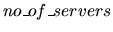
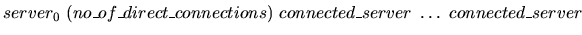
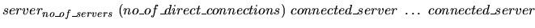
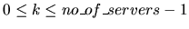
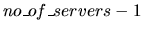

Figure 1: Critical links
| Critical Links |
In a computer network a link L, which interconnects two servers, is considered critical if there are at least two servers A and B such that all network interconnection paths between A and B pass through L. Removing a critical link generates two disjoint sub-networks such that any two servers of a sub-network are interconnected. For example, the network shown in figure 1 has three critical links that are marked bold: 0 -1, 3 - 4 and 6 - 7.
Figure 1: Critical links
It is known that:
Write a program that finds all critical links of a given computer network.


...

The first line contains a positive integer
(possibly 0) which is
the number of network servers.
The next
lines, one for each server in the network, are randomly ordered and show the way
servers are connected. The line corresponding to serverk,
,
specifies the number of direct
connections of serverk and the servers which are directly connected to serverk.
Servers are represented by
integers from 0 to
.
Input data are correct. The first data set
from sample input below corresponds to the
network in figure 1, while the second data set specifies an empty network.
8 0 (1) 1 1 (3) 2 0 3 2 (2) 1 3 3 (3) 1 2 4 4 (1) 3 7 (1) 6 6 (1) 7 5 (0) 0
3 critical links 0 - 1 3 - 4 6 - 7 0 critical links